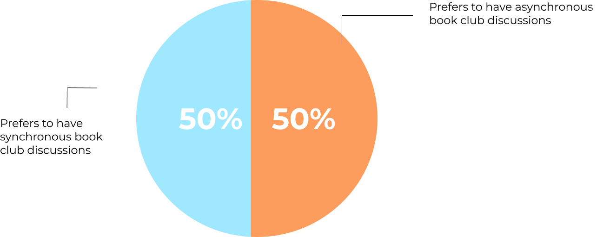
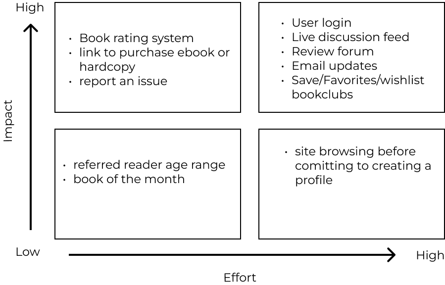

Have you ever wanted to bond over an amazing book that you’ve read but don't have the time in your day to go to the nearest city that has a bookclub once a month? Well, there are
many people in the world who enjoy reading the book that your currently interested
in and it can be the topic of discussion whenever you are available. Get ready to connect with readers all over the world on your time!
The Solution
A website that acts as a social platform to host book clubs and live discussion feeds
centered around your availibility by creating asynchronous and synchronus features allowing you to interact with others.
While there are many platforms that enable people to discuss topics around the globe
there aren't any platforms centered around the discussion of books that features hosting live shows, online meetups, uploading posts attributed to a specific book, and making friends across the globe.
Competitive Analysis
I conducted research to see who the direct competitors would be for BookClub to better understand how other businesses in the book industry prioritize social interaction in a digital space with books being a center focus.
Goodreads
LibraryThing
Litsy
User's values
Personal bookshelf
Book tracking
Ability to keep track of friends
Discussion boards
Area's of Improvement
User Interaction
Star rating system
Book organization
Age group specific reviews
Understanding the user
The best way to understand users is to speak with them directly. I wanted to interview users that currently read books and have an interest in online book clubs and discussions.
I asked participants specific questions to get a better understanding of what inspire and motivate their decisions in joining book clubs.
Partcipants
I interviewed 4 people in my network, who I knew loved to read and participated in book clubs in the past.
Interview findings

4/4 users prefer joining bookclubs that meet during their availibility
3/4 users prefer quickly reading reviews to understand other reader’s thoughts rather then sit in on a live discussion
1/4 users prefers in person bookclubs due to habit.
*All users have said they prioritize their time and because of this, time would affect if they will join a bookclub.
Personas
During the interviews, each participant shared their thought processes, inspirations, and frustrations when dealing with online or in person book clubs. The common insights led me to create an Empathy Map
followed by a persona to represent the target user.
Amanda Klein
Age: 31
Location: Texas, USA
Occupation: Sales associate
“I enjoy vicariously living through characters in a book of excitement and adventure.”
Bio: Amanda Klein has been reading since she was a little girl. her mind wanders into the brand new world she is immersed into while she is reading. She often finds herself questioning the characters and wanting to reflect on missions that transpired. She has been apart of school book clubs in the past but does not have the time to physically go in route to a in person book asynchronous book club.
Goals:
Loves to learn new things through discourse with others
Desires friendships with common interests
Enjoys leisure activities
Needs:
Convenience
Organization
A means to discuss her thoughts about a book
Frustrations:
Inability to commit to long distance leisure activities
Limited options available
Motivations:
Other reader's opinions
Imagination and thrill of reading and discussion
Favorite brands:
Ideate
Features
The product features can make or break the experience for users. After assessing the user, business goals and the technical constraints,
I made a list of features essential to the user's experience socializing with Bookclub.

Sitemap & User flow
based on my research, I found the main goals for the target users were to feel apart of a community and recieve information from other’s that would persuade or confirm their feelings towards a book. To convey that, I mapped out how users would go through the platform.
The user flow for the website focuses on the flow from the landing page to the user's book club of choice meeting page. The flow could go one of three ways, through the Sign Up, the Sign In, and the Search flow.
An onboarding was important to introduce the app to the new users and show them how they could set their book preferneces while signing up.
"Nice colorful layout that goes well with the purpose of the website."
"onboarding process is straight forward and simple"
Confusion
"Live chat placement on the bookclub page webpage isn't easily navigatable."
"If I press join am I immediately taken to the zoom meeting? What if the meeting day is not today?"
"How will I know the upcoming meetings?"
Opportunities
Create a better meeting page design by creating efficient navigation.
"The live chat box could stand out more."
Show meeting schedule for the month.
Iterations
Book club meeting page iteration to allow for easier navigation. Updates include a meeting schedule for the month and a closed live chat feed that is available at the very top of the page for members to engage with.
Final Thoughts
It was so fun to create ways for readers all over the world to connect through the books they love despite location and time availibility. In the future, I plan to expand on the features adding a book club monthly meeting schedule with a max participant counter.
How I would measure success:
Number of site visits
Number of sign-ups
Percentage of member connections through reviews and live chats in time blocks